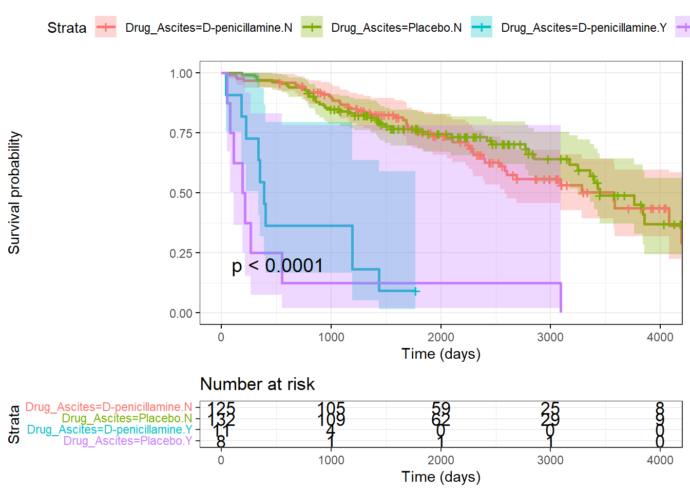

1)Is there a significant interaction effect between drug treatment (D-penicillamine vs placebo) and ascites status (present vs absent) on survival time?
Data Preparation: The dataset was first read and cleaned by removing missing values (na.omit). A new binary variable called Event was created to distinguish deaths (coded as “D”) from other statuses. This new column served as the event indicator for the survival analysis.
Survival Object Creation: A survival object (surv_obj) was constructed using the Surv function with the event indicator and survival time in days (N_Days).
Cox Model: Cox’s proportional hazards model is analogous to a multiple regression model and enables the difference between survival times of particular groups of patients to be tested while allowing for other factors. A Cox proportional hazards model was fitted using the coxph function, including an interaction term (Drug * Ascites) to assess the combined effect of drug treatment and ascites on survival.
Interaction Test: ANOVA stands for Analysis of Variance. It is a statistical method used to analyze the differences between the means of two or more groups or treatments. The significance of the interaction effect was evaluated using an ANOVA test with type III sums of squares via the Anova function from the car package.
The Pearson chi-square statistic (χ 2) involves the squared difference between the observed and the expected frequencies.
The likelihood-ratio chi-square statistic (G2) is based on the ratio of the observed to the expected frequencies.
Visualization with Kaplan-Meier Plot:
A new grouping variable, Drug_Ascites, was created to represent the four unique groups formed by the combinations of drug treatment and ascites status.
A Kaplan-Meier plot was generated using the ggsurvplot function to visualize the survival curves across these four groups.
The plot includes a risk table (showing the number of subjects at risk at different time points), a confidence interval, and a p-value to highlight significant differences among the groups.
Overall, this approach effectively identifies and visualizes the impact of the drug and ascites interaction on patient survival, providing valuable insights into the relationship between these factors
Code
library(survival)library(car)library(ggplot2)library(survminer)data =read.csv("C:/Users/HP/Downloads/cirrhosis+patient+survival+prediction+dataset-1/cirrhosis.csv")data_imputed <-na.omit(data)cirrhosis_data <-na.omit(data_imputed)# Convert 'Status' to a binary indicatordata_imputed$Event <-ifelse(data_imputed$Status =="D", 1, 0)# Create survival objectsurv_obj <-Surv(time = data_imputed$N_Days, event = data_imputed$Event)# Fit a Cox proportional hazards model with the new survival objectcoxph_model <-coxph(surv_obj ~ Drug * Ascites, data = data_imputed)coef(coxph_model)
# Test the interaction effectAnova(coxph_model, type ="III")
Analysis of Deviance Table (Type III tests)
LR Chisq Df Pr(>Chisq)
Drug 0.2462 1 0.6198
Ascites 23.0446 1 1.583e-06 ***
Drug:Ascites 0.4391 1 0.5075
---
Signif. codes: 0 '***' 0.001 '**' 0.01 '*' 0.05 '.' 0.1 ' ' 1
Code
# Create a factor variable for the combination of Drug and Ascitesdata_imputed$Drug_Ascites <-with(data_imputed, interaction(Drug, Ascites))# Plot Kaplan-Meier survival curvesggsurvplot(survfit(surv_obj ~ Drug_Ascites, data = data_imputed),data = data_imputed,risk.table =TRUE,pval =TRUE,conf.int =TRUE,xlab ="Time (days)",ggtheme =theme_bw())

The Kaplan-Meier survival curves reveal that the presence of ascites significantly impacts patient survival, with those affected by ascites showing much lower survival probabilities than those without. The survival probabilities for patients treated with D-penicillamine and those treated with a placebo are relatively similar within each ascites group. The statistical tests confirm that while ascites has a significant impact on survival (p < 0.0001), there isn’t a significant interaction between drug treatment and ascites status affecting survival. This implies that ascites plays a much more influential role in determining patient outcomes than the type of treatment administered.
Question 2
2)Do the distributions of lab values (bilirubin, albumin, etc.) differ significantly between patients with and without edema?
Data Grouping: The dataset was grouped into two categories: “Edema” (patients with any form of edema) and “No Edema” (patients without edema). This grouping was done by creating a new column called Edema_Status based on the existing Edema column, where statuses “Y” (Yes) and “S” (Slight) were considered as “Edema.”
Visualization and Statistical Testing: A boxplot was used to visualize the distribution of the Bilirubin lab values across the two groups. This was achieved using ggboxplot from the ggpubr package, and an ANOVA (Analysis of Variance) test was applied to compare mean differences. For the Albumin lab values, a Kruskal-Wallis test (a non-parametric alternative to ANOVA) was conducted to check for significant differences across groups since this test is more suitable for non-normal distributions.
Interpretation: The boxplot visually compares the bilirubin distributions between the two edema groups while providing statistical significance via the ANOVA p-value. The Kruskal-Wallis test for albumin determines whether the differences between edema groups are statistically significant for this specific lab value.
Code
library(dplyr)library(ggpubr)# Group patients by edema statuscirrhosis_edema <- data_imputed %>%mutate(Edema_Status =ifelse(Edema %in%c("Y", "S"), "Edema", "No Edema"))# Perform one-way ANOVA or Kruskal-Wallis tests for each lab valueggboxplot(cirrhosis_edema, x="Edema_Status", y="Bilirubin") +stat_compare_means(method="anova")
Kruskal-Wallis rank sum test
data: Albumin by Edema_Status
Kruskal-Wallis chi-squared = 24.13, df = 1, p-value = 9.005e-07
The analysis shows that both bilirubin and albumin levels differ significantly between patients with and without edema. The boxplot indicates that patients with edema have substantially higher bilirubin levels than those without. This difference is statistically significant, as reflected by the ANOVA p-value (p = 1.6e-11). Similarly, the Kruskal-Wallis test reveals a significant difference in albumin levels between the two groups (p = 9.005e-07). This suggests that edema status is associated with elevated bilirubin and reduced albumin levels, indicating a worsening clinical condition.
Question 3
3)Do the relationships between lab values (e.g. bilirubin vs albumin) differ significantly between treatment groups?
Dataset Preparation: The dataset was filtered to include only the relevant lab values (Bilirubin and Albumin) as predictor variables (X), while the treatment groups (Drug) were used as the target variable (y). The treatment groups were converted into a factor to be used for classification purposes.
Training and Testing Split: The dataset was randomly partitioned into training (80%) and testing (20%) sets to ensure that model evaluation would be done on unseen data.
Random Forest Models: For each treatment group level, a separate binary classification model was created. The model was trained to distinguish whether a sample belonged to that treatment group. For instance, if the treatment group is D-penicillamine, the model is trained to identify samples either belonging to D-penicillamine (1) or not (0). Random forest models were trained on the training data for each treatment level using the predictor variables (Bilirubin and Albumin).
Feature Importance Analysis: The feature importance for each treatment group was calculated using the random forest models, which evaluate how influential each predictor variable is for classification. The results are printed, showing which lab value plays a significant role in distinguishing patients within each treatment group.
Code
library(randomForest)library(caret)# Define your dataset and target variableX <- cirrhosis_data[, c("Bilirubin", "Albumin")]y <-as.factor(cirrhosis_data$Drug) # Convert Treatment to a factor for classification# Split data into training and testing setsset.seed(123)train_index <-createDataPartition(y, p =0.8, list =FALSE)X_train <- X[train_index, ]y_train <- y[train_index]X_test <- X[-train_index, ]y_test <- y[-train_index]# Train separate Random Forest models for each treatment group# Train separate Random Forest models for each treatment grouptreatment_levels <-levels(y)rf_models <-list()for (treatment_level in treatment_levels) { y_train_treatment <-ifelse(y_train == treatment_level, 1, 0) # Convert treatment level to binary indicator rf_models[[treatment_level]] <-randomForest(x = X_train, y = y_train_treatment, ntree =100)}feature_importance <-lapply(rf_models, importance)# Print feature importance for each treatment groupfor (treatment_level in treatment_levels) {cat("Treatment Group:", treatment_level, "\n")print(feature_importance[[treatment_level]])cat("\n")}
Treatment Group: D-penicillamine
IncNodePurity
Bilirubin 18.87986
Albumin 22.87848
Treatment Group: Placebo
IncNodePurity
Bilirubin 18.68447
Albumin 22.79035
The analysis shows that for both treatment groups, D-penicillamine and placebo, albumin is a more important feature than bilirubin in distinguishing between patients. This is evident from the higher IncNodePurity scores for albumin compared to bilirubin in both groups. Despite the treatment type, albumin consistently plays a more significant role in classification, indicating that albumin levels are a crucial clinical marker for differentiating patient responses and predicting outcomes. The consistency in importance across groups suggests that albumin’s predictive relationship remains similar regardless of treatment type.
[2]E. A. Roberts, “Update on the Diagnosis and Management of Wilson Disease,” Current Gastroenterology Reports, vol. 20, no. 12, Nov. 2018, doi: https://doi.org/10.1007/s11894-018-0660-7.
[3]K. Zachou et al., “Review article: autoimmune hepatitis - current management and challenges,” Alimentary Pharmacology & Therapeutics, vol. 38, no. 8, pp. 887–913, Sep. 2013, doi: https://doi.org/10.1111/apt.12470.
[4]G. V. Papatheodoridis, P. Lampertico, S. Manolakopoulos, and A. Lok, “Incidence of hepatocellular carcinoma in chronic hepatitis B patients receiving nucleos(t)ide therapy: A systematic review,” Journal of Hepatology, vol. 53, no. 2, pp. 348–356, Aug. 2010, doi: https://doi.org/10.1016/j.jhep.2010.02.035.